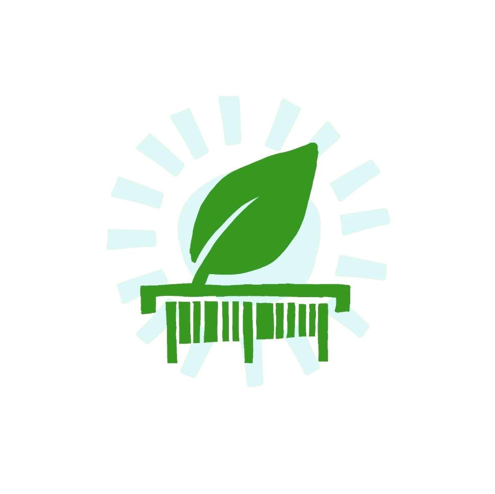

Dein smarter CO₂-Scanner für Lebensmittel
Willkommen bei sCO₂nner! Unsere App hilft dir, den CO₂-Fußabdruck deiner Lebensmittel zu verstehen und bewusste, klimafreundlichere Entscheidungen zu treffen – einfach, schnell und direkt beim Einkaufen.

Die wichtigsten Funktionen im Überblick:
- Einfaches Scannen: Erfasse den EAN-13-Code eines Lebensmittels mit deiner Kamera.
- Detaillierte Analyse: Erhalte eine Aufschlüsselung der CO₂-Emissionen nach Landwirtschaft, Transport, Verarbeitung und Verpackung.
- Anschauliche Vergleiche: Verstehe die abstrakten CO₂-Werte durch Umrechnungen in gefahrene Autokilometer, Streaming-Stunden oder die Kompensationsleistung von Bäumen.
- Umfangreiche Datenbank: Durchsuche über 600 Lebensmittel in verschiedenen Kategorien.
- Intelligente Vorschläge: Finde klimafreundlichere Alternativen zu deinen Lieblingsprodukten.
- 100% Offline & Datenschutz: Die App funktioniert ohne Internetverbindung und sammelt keine persönlichen Daten.